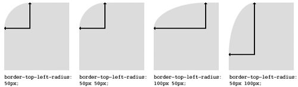

Rounded borders (border-radius)
A new border feature of CSS3 is rounded border. This picture guide to creating rounded border with CSS3 border-radius property.
https://media02.hongkiat.com/css3-guide/css-rounded-borders.jpg
Rounded borders with image (border-images)
Another exciting new border feature of CSS3 is the property border-image. With this feature you can define an image to be used instead of the normal border of an element. This feature is actually split up into a couple of properties: border-image and border-corner-image. These two values are shorthands for:
border-image:
border-top-image
border-right-image
border-bottom-image
border-left-image
border-corner-image:
border-top-left-image
border-top-right-image
border-bottom-left-image
border-bottom-right-image
border-image currently works in Safari and Firefox 3.1 (Alpha). The syntax to use it is:
http://www.css3.info/preview/border-image/